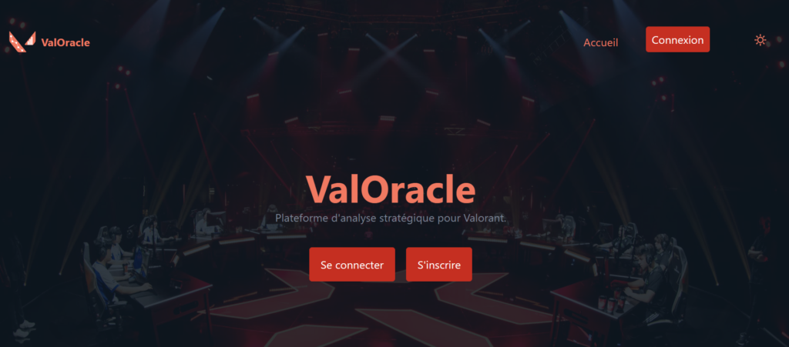
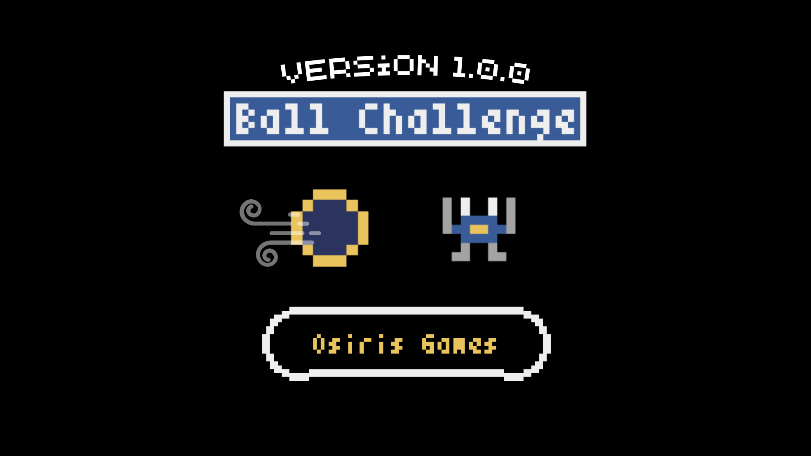
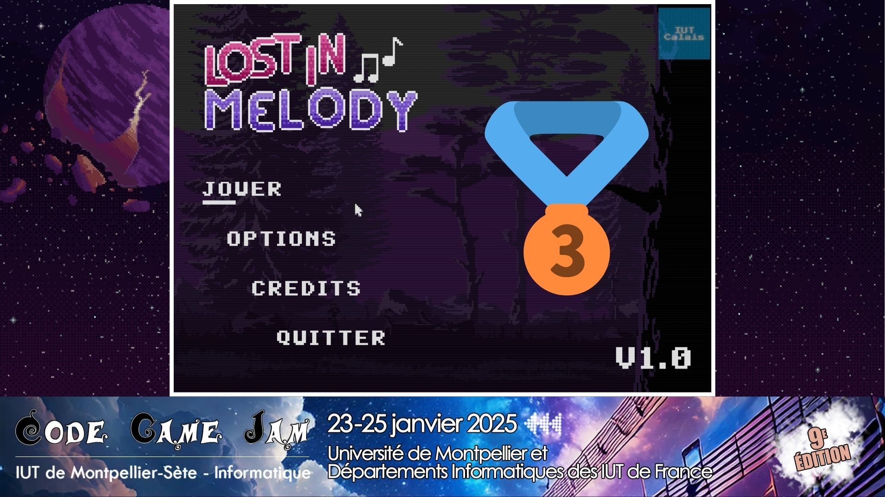
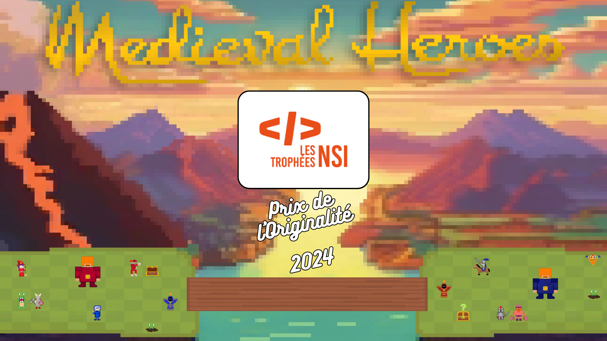
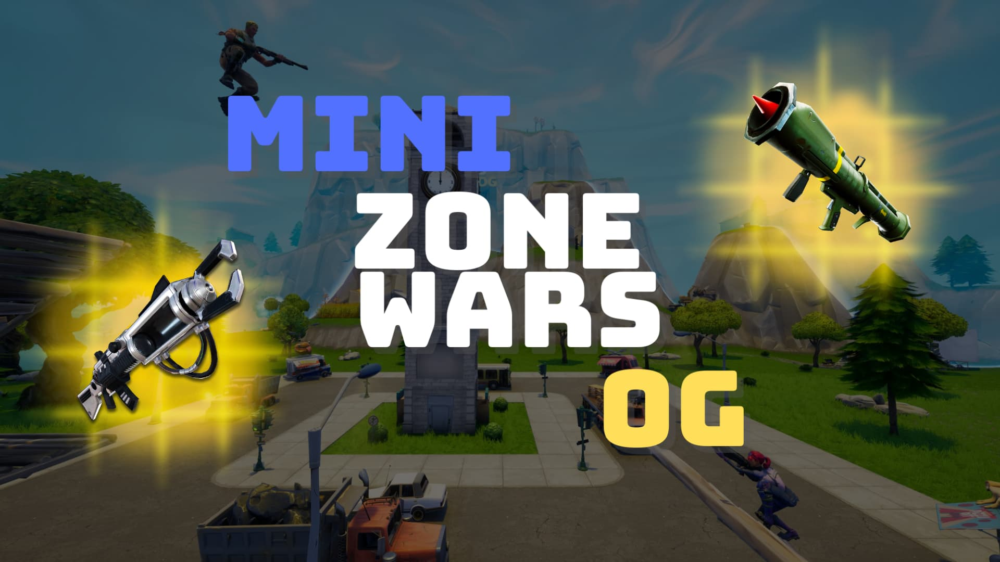
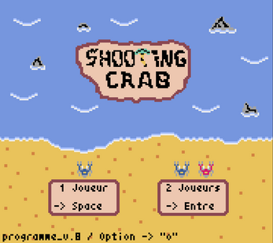

Mes projets
Bienvenue dans mon univers créatif ! Vous retrouverez mes jeux sur itch.io, et mes autres projets de développement sur GitHub. Je conçois également des cartes dans le mode créatif de Fortnite. Certains projets sont réalisés seuls, d'autres en collaboration avec des amis ou membres de la communauté. Vous pouvez utiliser les filtres ci-dessous pour trier par année ou voir mes projets favoris.

TCG Pokémon (Node.Js/Vue.Js)
Conception d’un jeu de cartes Pokémon avec un backend Node.Js (API) et un frontend sous Vue.Js. (SPA)
Projet API Projet SPA
ValOracle - SAE Web API
(Gestion de Projet)
Conception d’un site web (PHP) permettant de réaliser des prédictions sur des données Valorant (PostgreSQL), en équipe de 3. Ces deux parties sont liées à une API (Node.Js).
Voir le site Voir sur GitHub
Ball Challenge (Python)
🏐 Esquivez les balles
🪙 Collectez des pièces
👾 Graphismes rétro
🕹️ Facile à jouer, difficile à maîtriser

Lost in Melody
(Gestion de Projet)
Explorez les plateformes à la recherche de partitions ou de mélodies apaisantes pour chasser cet air obsédant !
Voir sur Itch.io
Medieval Heroes (Python)
Découvrez Medieval Heroes, un jeu de plateau innovant mêlant stratégie, action et suspense ! Affrontez vos amis en local ou défiez un robot dans des batailles épiques.
Voir sur Itch.io Voir sur GitHub
Mini Zone Wars OG
🔫 Armes du Chapitre 1
🗺️ Mini carte du Chapitre 1
❌ Anti-tryharder
🏆 Tout le monde peut gagner !

Shooting Crab (Python)
Mon tout premier jeu ! Un shooter rétro avec des crabes robots, jouable en solo ou en coop locale. Simple à prendre en main, mais difficile à maîtriser.
Voir sur Itch.io